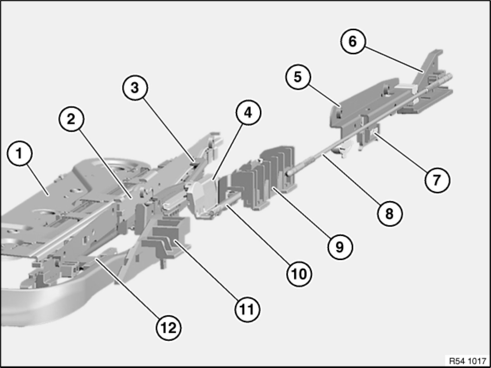
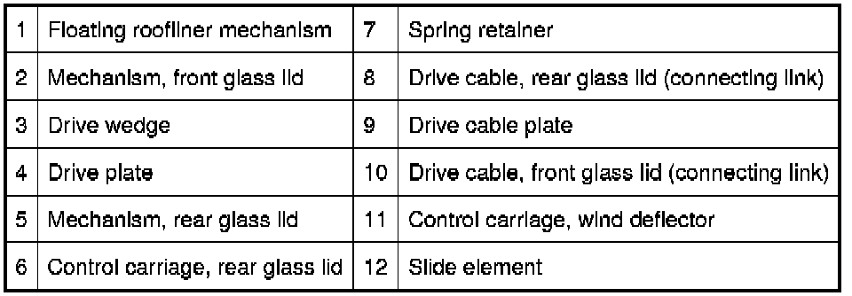
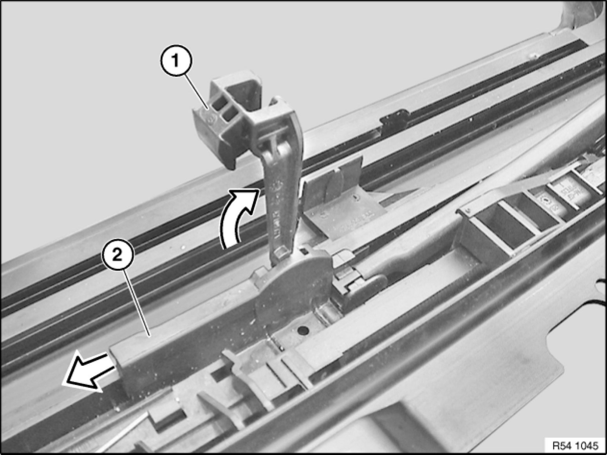
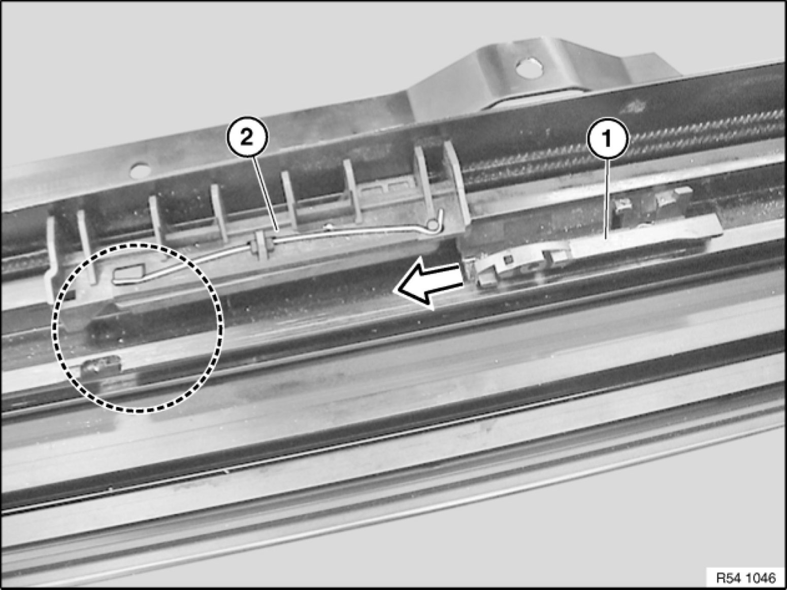

54 10 ... Removing and Installing/Replacing Drive Cable Plate
54 10 ... - Removing and installing/replacing drive cable plate

Necessary preliminary tasks:
- Remove mechanism for glass cover at front 54 10 020 Removing and Installing Mechanism For Front Glass Lid
Overview of glass lid mechanism:



If necessary, remove drive wedge (1).
If necessary, slide drive cable plate (2) towards rear and remove from guide rail.

Important!
Risk of damage when installing drive cable plate
The rear drive cable plate (2) must be engaged before the front drive cable plate (1) is installed.
Incorrect setting can be identified from spring position and lever position (marked area).
Check engagement of rear drive cable plate (2) in guide rail.
Slide in drive cable plate (1).